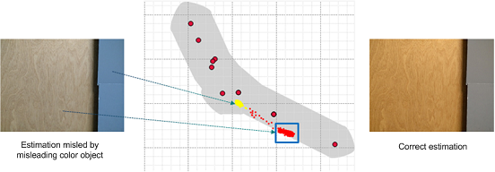
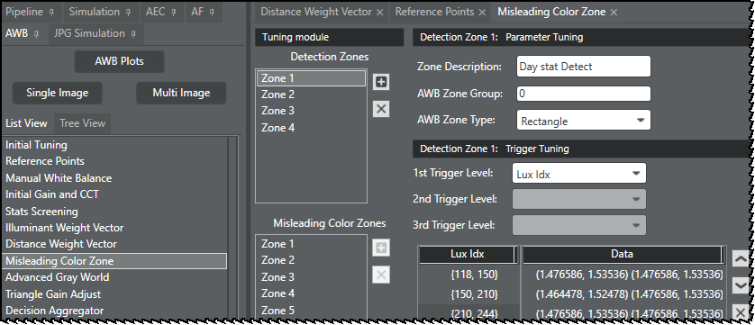
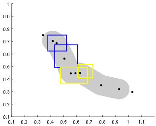
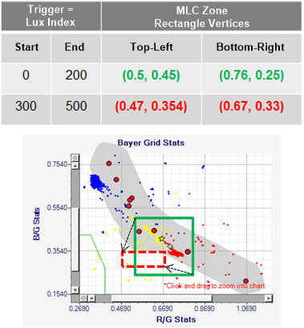
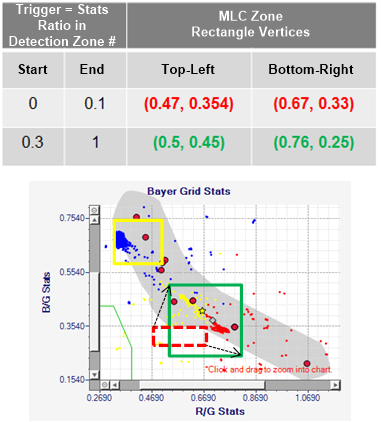

Nongray stats located inside the gray zone can severely affect the final AWB
decision precision if they are treated as gray stats. For example, if stats from a
yellow object under indoor lights (for example, TL84 fluorescent light) are located in
the gray zone, the final AWB decision can make the final image bluish as shown in the
figure. 
AWB misleading color (MLC) processing removes MLC stats in the AWB decision estimation.
This is accomplished by identifying and removing stats that are inside specific areas of
the gray zone. Each of these specific areas defines an MLC zone. Stats in an MLC
zone are not considered as gray stats even though they are inside the gray zone.
Misleading color zone tuning requires the definition of detection zones
and misleading color zones. The following image shows the Chromatix tool user interface
that is used to configure MLC parameters.

Detection zones define the areas of the gray zone where nongray stats are
commonly found. Each detection zone is assigned to a
group. The
MLC process counts the number of stats in each detection zone group and the information
collected is used with a specified lux index range to trigger MLC zones corresponding to
the detection zone/group.
Figure : Blue boxes are Group 0 detection zones. Yellow boxes are
Group 1 detection zones.

An MLC zone is defined by either rectangles or triangles. The Chromatix tool
allows for an unlimited number of MLC zones, but a standard set of 10 MLC zones is
defined during AWB initial tuning. The size/center position of an MLC zone is defined by
triggers. There are three levels of MLC zone triggers. The options available for the
first two triggers are as follows:
- Lux Index
- CCT
- Valid Stats Cnt Ratio – The ratio of valid gray stats/total number of stats.
- Agw RG – RG point of advanced gray world
- Agw BG – BG point of advanced gray world
- Zone group # Count Ratio – The ratio of number of stats in group # detection
zone. For example, in Zone Group 1, the number of stats detected in all group 1
zones/total number of stats.
The third level trigger is always Flash Sensitivity. The following figures
illustrate sample trigger scenarios for MLC zones.
Figure : Example of MLC zones triggered by stats within lux index
start/end values. Green and red data points define the vertices of green and red
rectanglular MLC zones.

Figure : Example of MLC zones triggered by number of stats in specified
detection zone (yellow box). Green and red data points define the vertices of green
and red rectanglular MLC zones.
